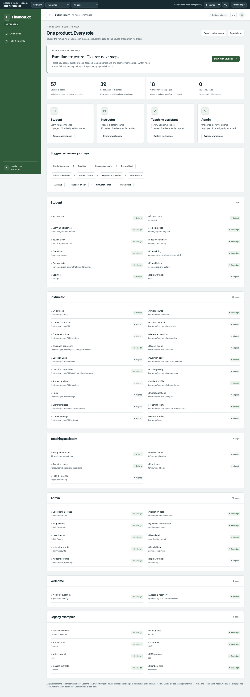
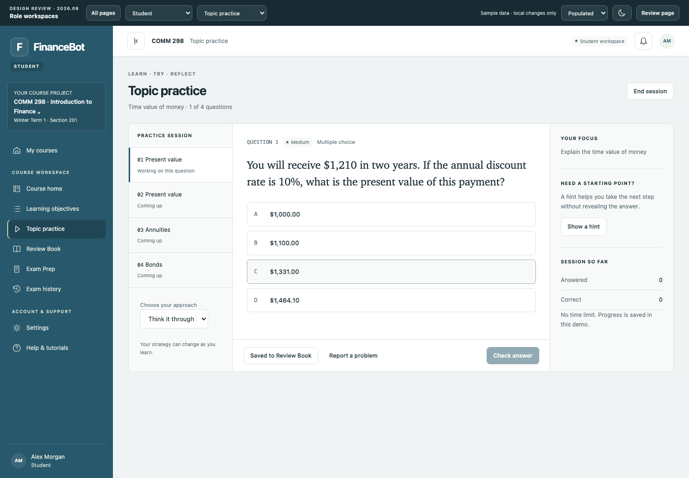
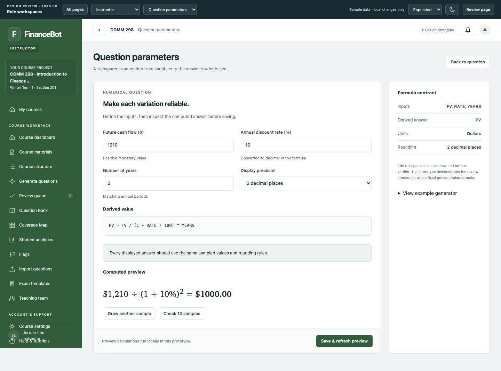
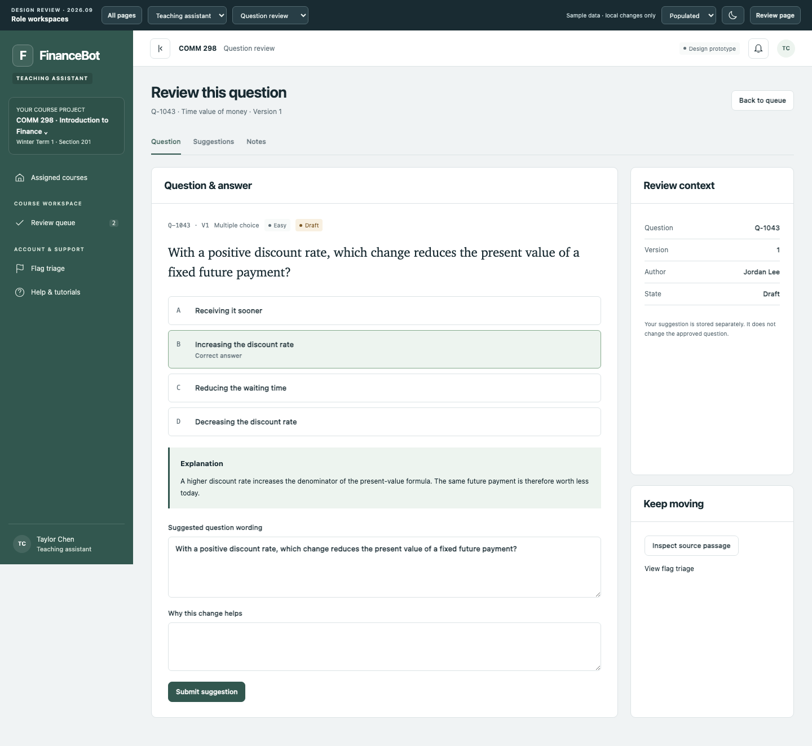
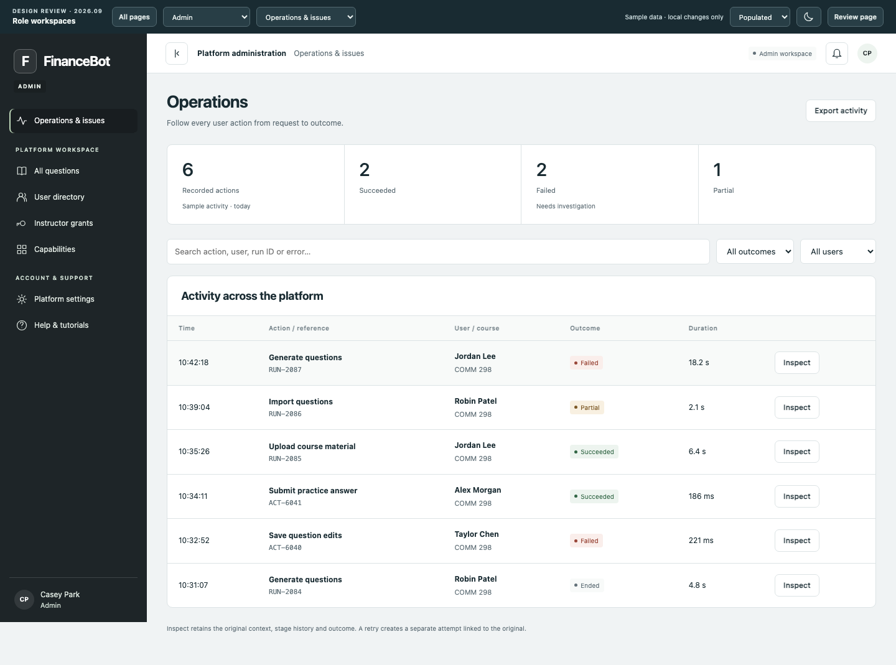
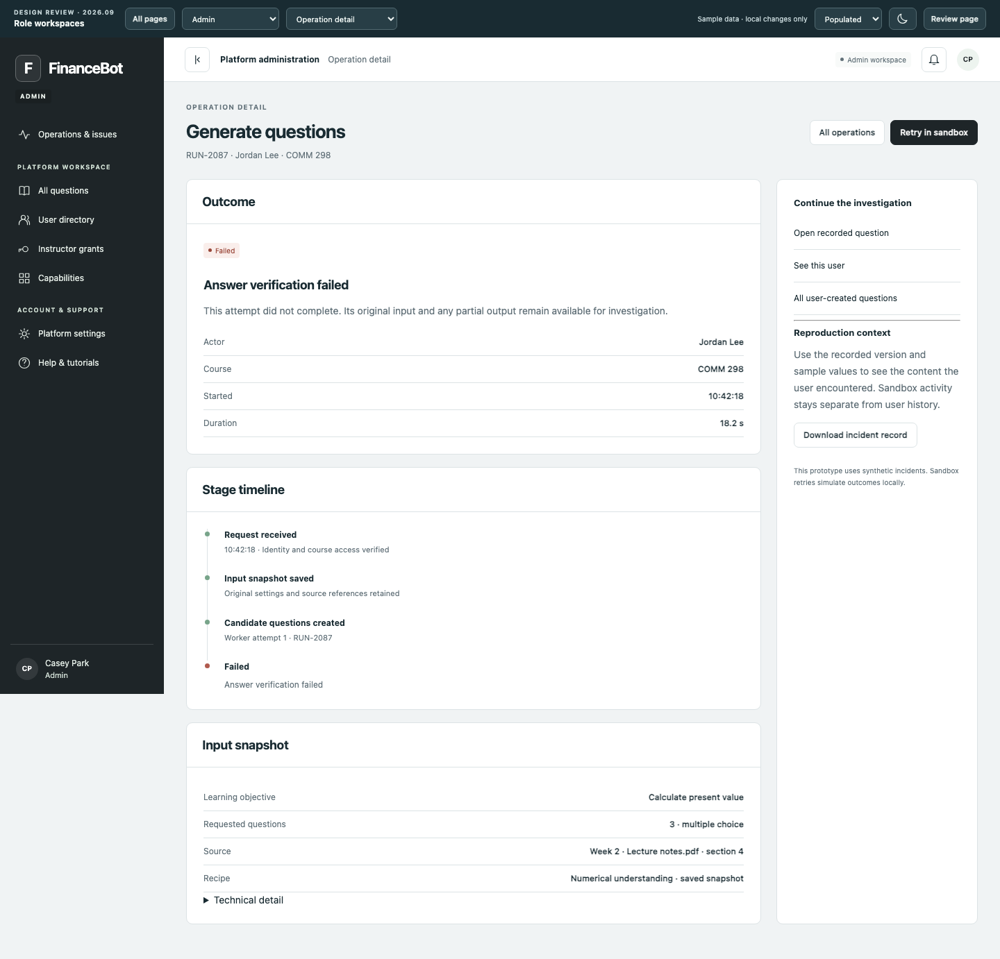
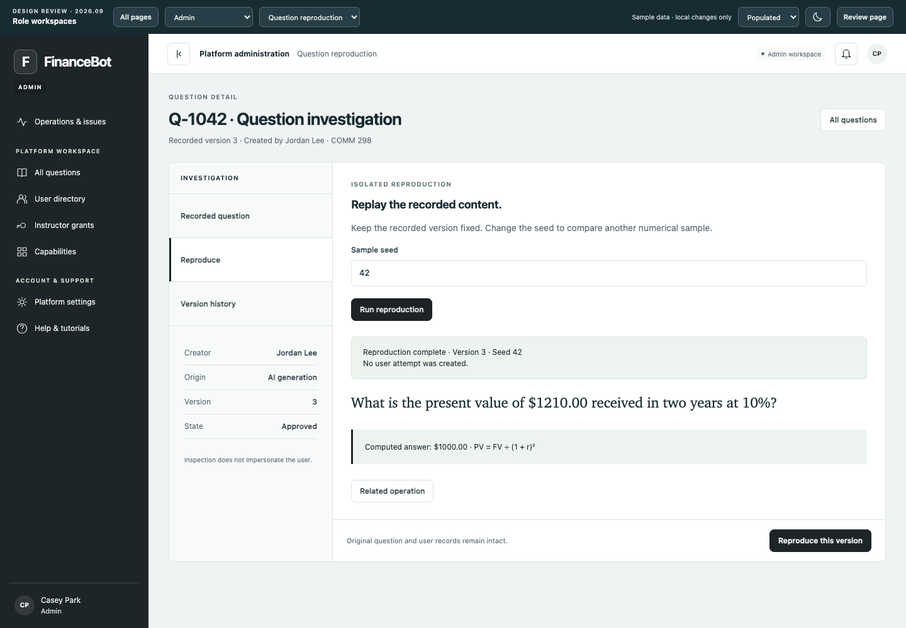
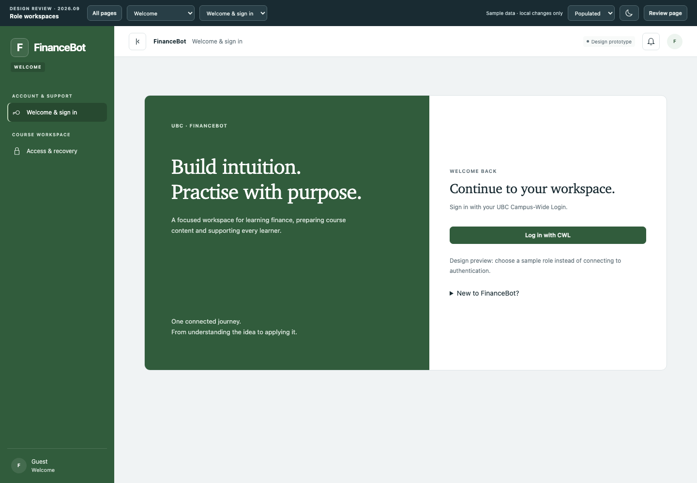
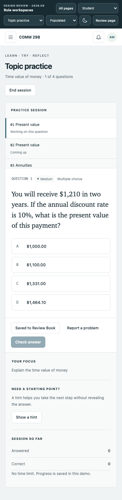
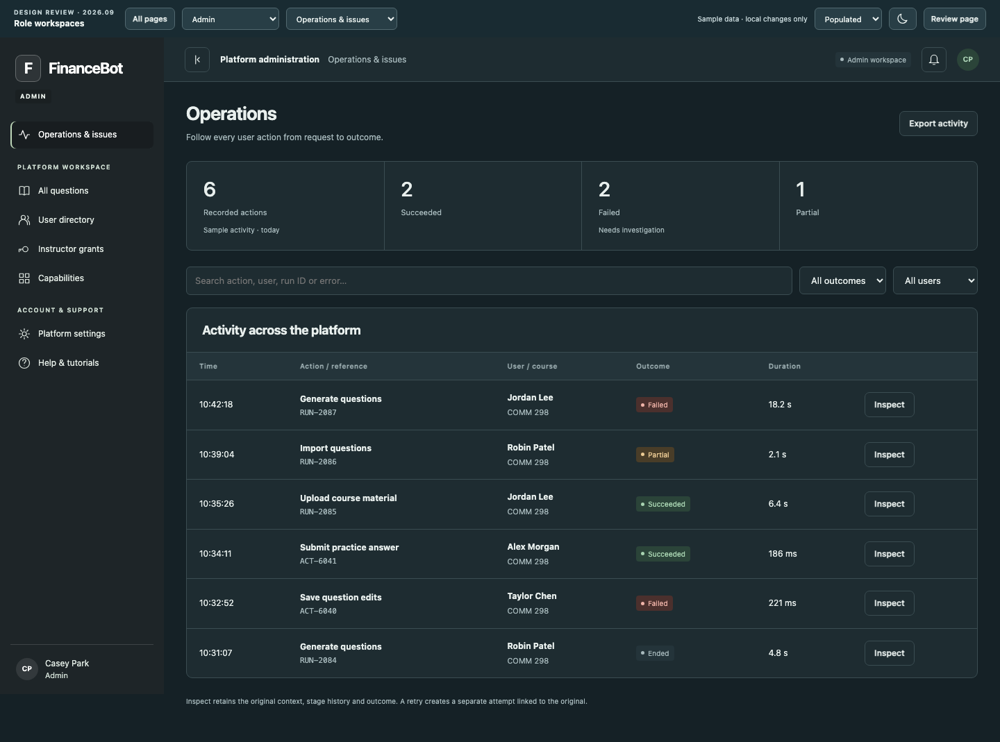

审核截图
截图记录默认样例。点击图片查看原图，点击页面链接体验操作。


Student · 答题工作区
打开页面 →

Instructor · 参数编辑
打开页面 →

TA · 题目建议
打开页面 →

Admin · 操作审计
打开页面 →

Admin · 失败调查
打开页面 →

Admin · 题目复现
打开页面 →

登录入口
打开页面 →

Student · 手机布局
打开页面 →
